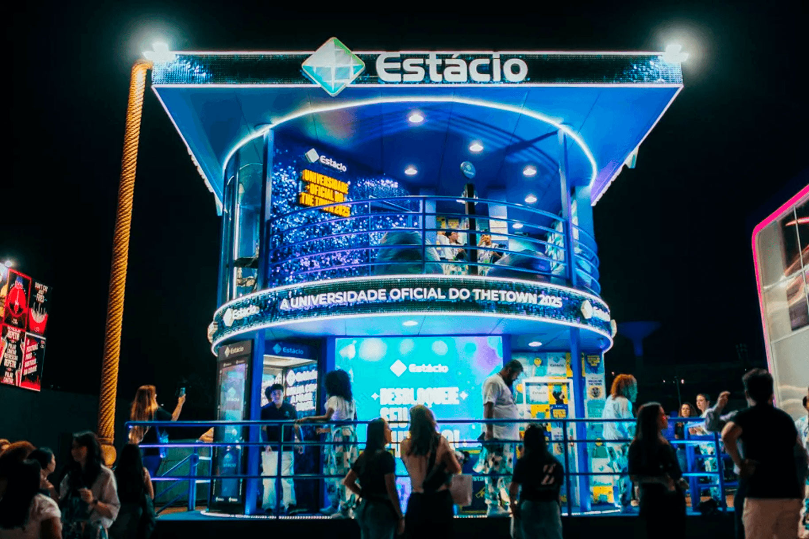
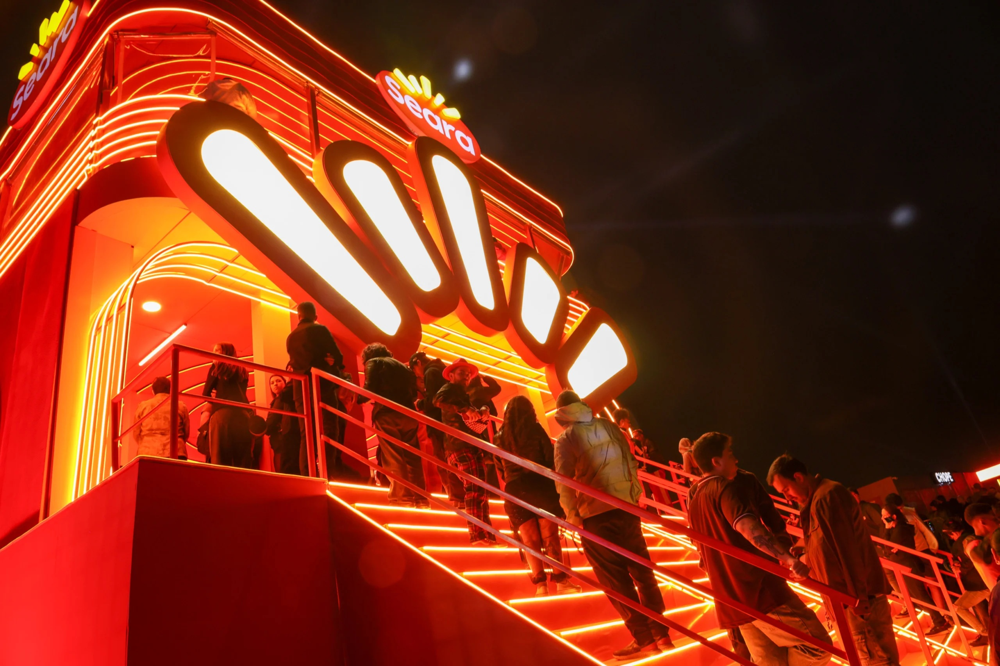
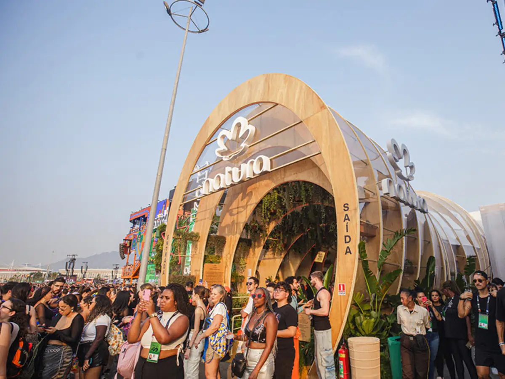
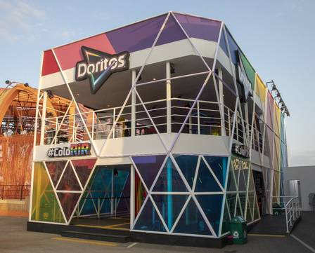
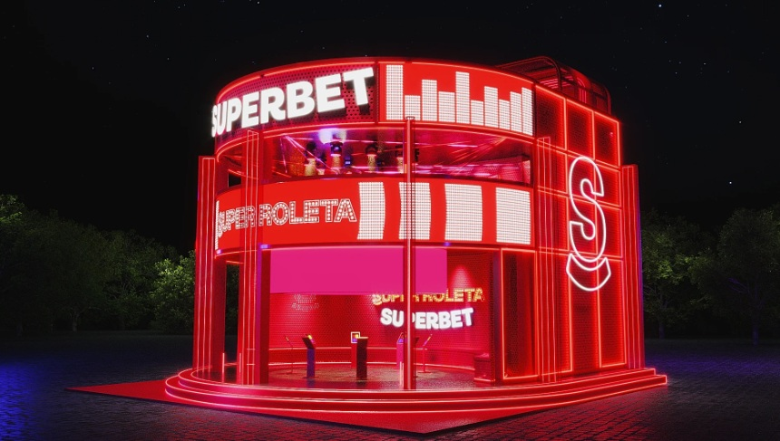
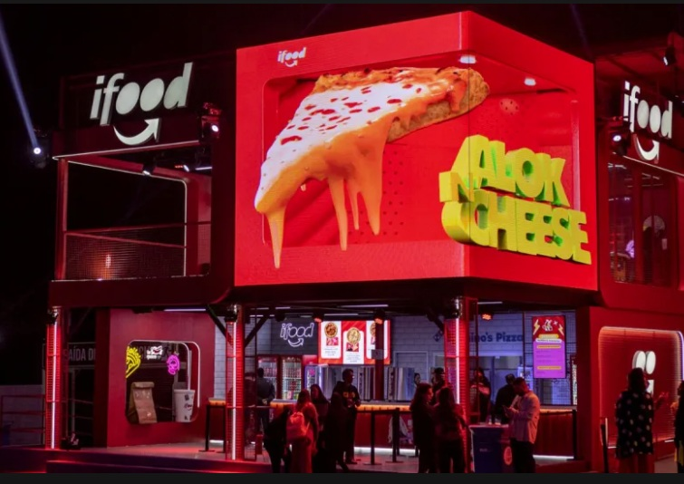
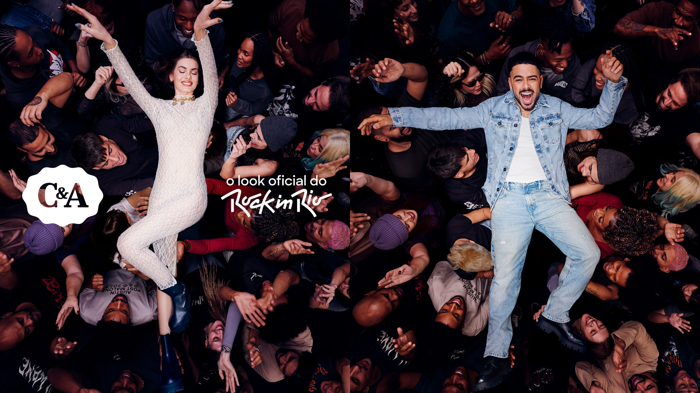
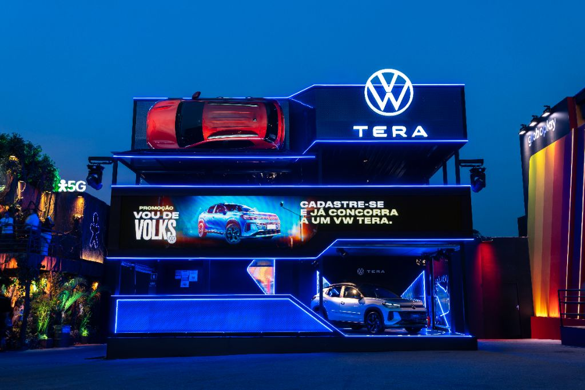
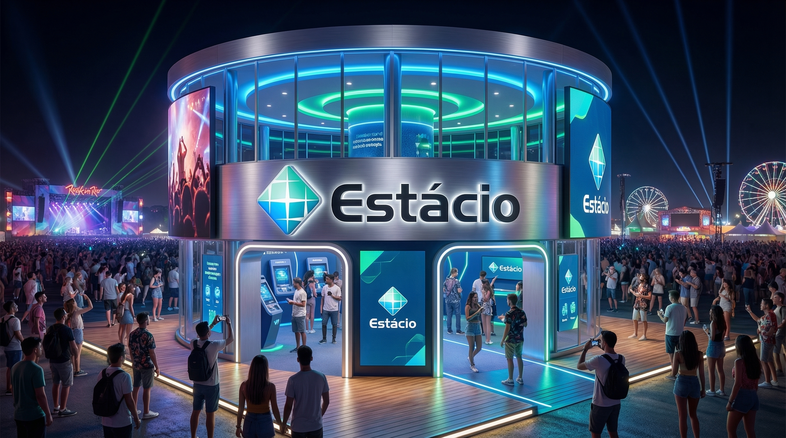

ApoiadoraUniversidade Estácio
Marca educacional que usa o festival como laboratório vivo de experiência, carreira, pertencimento e empregabilidade.
Uma leitura estratégica sobre como os patrocinadores e apoiadores transformam presença de marca em experiência, cultura, utilidade, hospitalidade e memória.
No Rock in Rio, as marcas mais relevantes não se limitam à mídia tradicional: elas passam a ocupar o tempo, o corpo, a atenção e a lembrança do público.
Estandes, rooftops, lounges, fachadas cenográficas e instalações proprietárias.
Jogos, desafios físicos, experiências imersivas e participação ativa.
Benefícios, conforto, sampling, conveniência, descanso e recompensa.
Sustentabilidade, inclusão, circularidade, educação e valor cultural.
Estrutura editorial ideal para transformar a pesquisa em um site forte, acadêmico e visualmente sofisticado.
Itaú, Heineken, Superbet, Prudential, iFood
Coca-Cola, KitKat, TIM, Doritos
Natura, Heineken, Volkswagen
Seara, iFood, Ipiranga
Universidade Estácio
Cada bloco abaixo lê a marca como experiência, comportamento e narrativa dentro do ecossistema do festival.

ApoiadoraMarca educacional que usa o festival como laboratório vivo de experiência, carreira, pertencimento e empregabilidade.
 Patrocinador Master
Patrocinador Master
Exemplo de marca que opera em escala: arquitetura, benefícios, hospitalidade, ativações icônicas e integração à jornada do público.
 Patrocinadora
Patrocinadora
Une música, entretenimento, ritual de consumo e discurso de sustentabilidade em experiências de alto impacto sensorial.
 Patrocinadora
Patrocinadora
Converte música e convivência em território social de marca, reforçando o papel da marca como ponto de encontro cultural.

PatrocinadoraTrabalha o território de food experience, degustação e assinatura gastronômica com forte apelo sensorial.
 Patrocinadora
Patrocinadora
Leva a lógica da jornada ao festival: pausa, descanso, recarga, conveniência e mobilidade emocional.
 Patrocinadora
Patrocinadora
Faz da pausa um ativo cultural, combinando humor, creator economy e microexperiências compartilháveis.
 Patrocinadora
Patrocinadora
Transforma um atributo abstrato em gesto concreto por meio de experiências ligadas à superação, coragem e conquista.
 Patrocinadora
Patrocinadora
Torna infraestrutura tecnológica visível e sensorial, provando conectividade por meio da própria experiência.

PatrocinadoraLeva bem-estar, beleza e sensorialidade para dentro de um ambiente intenso, criando contraste e coerência com ESG.

PatrocinadoraTrabalha atitude, linguagem jovem, snack culture e experiências mais lúdicas, urbanas e visuais.

PatrocinadoraExplora gamificação, rooftop, lounge e entretenimento social para construir familiaridade emocional com a marca.

PatrocinadoraSai do papel de delivery e vira operador de ritmo, conveniência, fluxo e entretenimento pop.

BenchmarkBom benchmark de como moda pode ocupar o festival como identidade, utilidade e ocasião de uso.

BenchmarkUne mobilidade, design e storytelling cultural, transformando o automóvel em narrativa de lifestyle e inovação.
Um conjunto de imagens para comunicar monumentalidade, música, socialidade, tecnologia, gastronomia e experiência premium.


O valor não está apenas no estande, mas na qualidade da jornada construída ao redor dele.
As marcas mais fortes não são apenas as mais visíveis, mas as que conseguem ser lembradas pelo que fizeram o público sentir.
Brand Experience eficiente combina cenografia, utilidade, interatividade, conteúdo e coerência simbólica.
No festival, a marca deixa de falar sobre si e passa a ocupar culturalmente a experiência do público.
O Rock in Rio 2026 reforça uma lógica em que marcas operam como plataformas de cultura, serviço, emoção e pertencimento. A análise mostra diferentes caminhos de Brand Experience: escala e hospitalidade, entretenimento, tecnologia, gastronomia, bem-estar e educação.
Em 2026, a Universidade Estácio redefine sua presença no Rock in Rio: de participante a criadora de experiências inesquecíveis.

“A Universidade Estácio se prepara para elevar sua participação no Rock in Rio 2026 a um novo patamar de inovação, criatividade e experiência de marca
Idealização